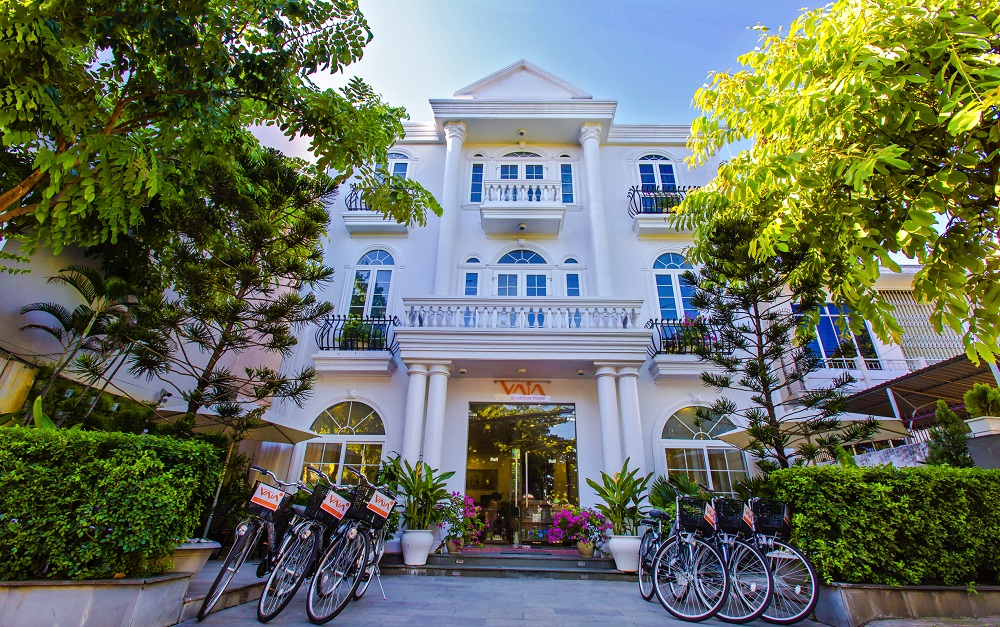

1 / 3

2 / 3
3 / 3

-Just a short walk from the ancient city of Hoi An, VaiA Boutique Hotel Hoi An caters to demanding travellers in pursuit of cosy and comfortable accommodation for the duration of their stay in Hoi An.
Its bright, contemporary design and decoration creates a welcoming and relaxing environment for VaiA Boutique Hotel Hoi An guests, and coupled with the personal service assured by the hotel staff, will help to make your stay a memorable experience.
Eighteen well-appointed rooms ranging from Standard, Deluxe to Family provide a comfortable home base from which to explore the ancient city on its doorstep.
Breakfast and light refreshments are served at the Little Terrace Café in the lobby. Free tea and coffee is available to guests throughout the day at the Little Terrace Café.
Free wifi is available throughout VaiA Boutique Hotel Hoi An, and free Internet access is provided for guests in the Lobby.
Other services including airport/train transport, tour desk, bicycle hire are all available at the Reception
Vaia Boutique Hotel Hoian - # 489, Cua Dai Road – Hoi An City, Vietnam | info@vaiahotel.com - (+84) 2353 916 499